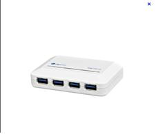
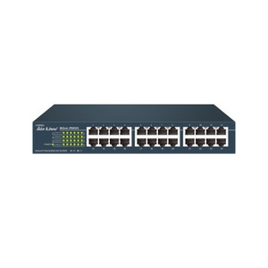
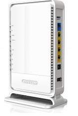
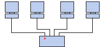

| |
Il Repeater:
- E’ un apparato di livello 1 (fisico), quindi intepreta solo i segnali elettrici e ha
come unità trasmissiva il singolo bit.
- Il repeater serve ad estendere la lunghezza del canale trasmissivo e a realizzare
topologie ad albero.
- Rigenera stringhe di bit ricevute su un canale e le ritrasmette sugli altri canali
|
|  |
Lo Hub:
- L’Hub è un concentratore di cablaggio (opera al livello 1)
- Serve a collassare una topologia a bus o ad anello in un topologia a stella, semplificando
(e rendendo più affidabili) le operazioni di cablaggio
- Non aumenta la capacità trasmissiva (l’hub si comporta come un ripetitore)
|
|  |
Lo Switch:
- Se l’hub non si comporta come un repeater, ma opera commutazione a livello di trama,
ho uno switch.
- Lo switch aumenta la capacità della rete perché permette di trasmettere più pacchetti
contemporaneamente se sorgente e destinazione sono diversi.
|
|  |
Router:
- Dispositivo di livello 3 (rete)
- I router più recenti sono in grado di instradare pacchetti di protocolli diversi (IP,
DECnet...)
- Se un router ha un modulo di bridging per quei protocolli - per sola rete locale - che
non hanno un livello 3 (es. LAT, NetBeui), è detto brouter.
|
|  |
In realtà, in una topologia ad anello, i computer non sono collegati in cerchio, ma ad un
ripartitore (detto MAU,Multistation Access Unit) che gestisce la comunicazione tra i computer a
lui collegati impartendo ad ognuno di essi un intervallo di tempo di parola.
|